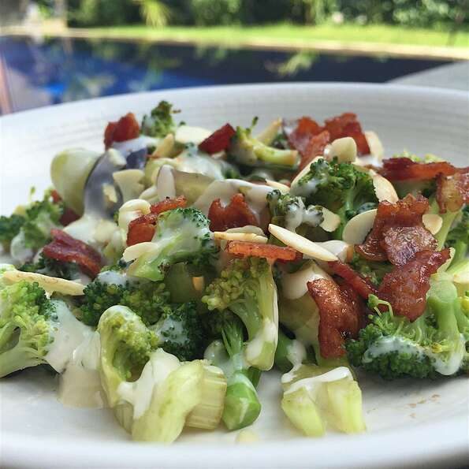

Spring Salad

Description
Quick and delicious salad
Ingredients:
- 12 slices bacon
- 2 heads fresh broccoli, florets only
- 1 cup chopped celery
- ½ cup chopped green onions
- 1 cup seedless green grapes
- 1 cup seedless red grapes
- ½ cup raisins
- ½ cup blanched slivered almonds
- 1 cup mayonnaise
- 1 tablespoon white wine vinegar
- ¼ cup white sugar
Steps:
- Place bacon in a large, deep skillet. Cook over medium high heat until evenly brown. Drain, crumble and set aside.
- In a large salad bowl, toss together the bacon, broccoli, celery, green onions, green grapes, red grapes, raisins and almonds.
- Whisk together the mayonnaise, vinegar and sugar. Pour dressing over salad and toss to coat. Refrigerate until ready to serve.
Nutrition Facts:
Per Serving540 calories; protein 9.4g; carbohydrates 28.9g; fat 44.8g; cholesterol 39mg; sodium 546.5mg